Objetivos de Desarrollo Sostenible
Los Objetivos de Desarrollo Sostenible (ODS) son un conjunto de 17 objetivos globales adoptados por todos los Estados Miembros de las Naciones Unidas en 2015 como parte de la Agenda 2030 para el Desarrollo Sostenible. Estos objetivos buscan abordar los desafíos globales, incluyendo la pobreza, la desigualdad, el cambio climático, la degradación ambiental, la paz y la justicia.
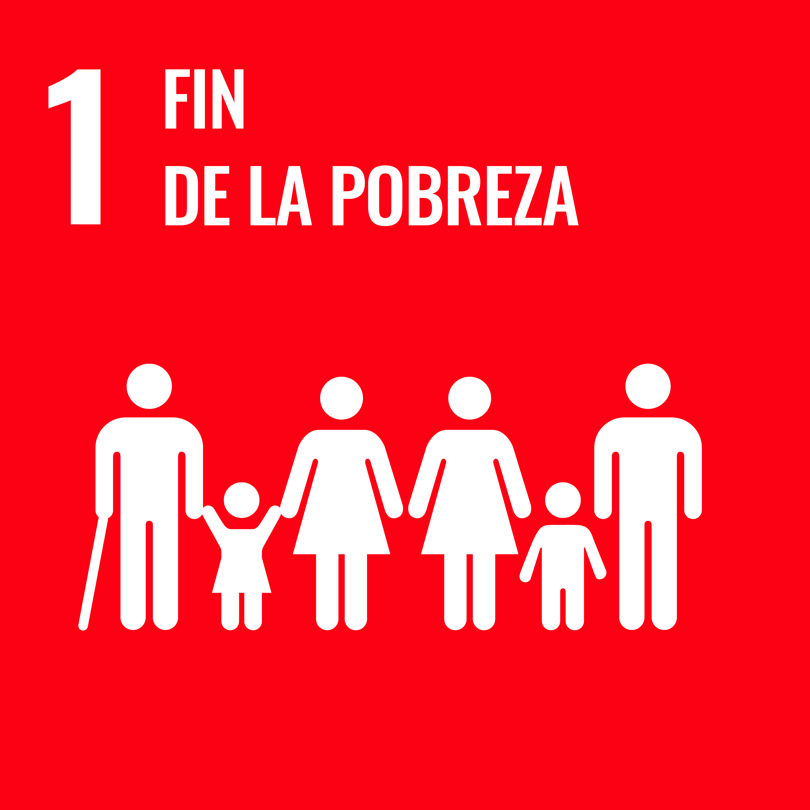
ODS 1: Fin de la Pobreza
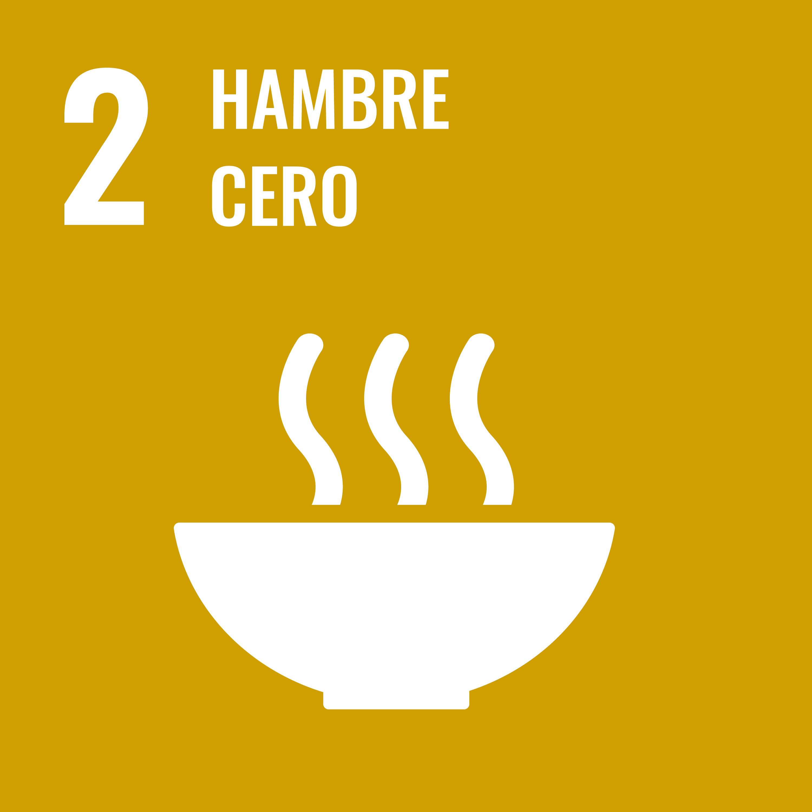
ODS 2: Hambre Cero
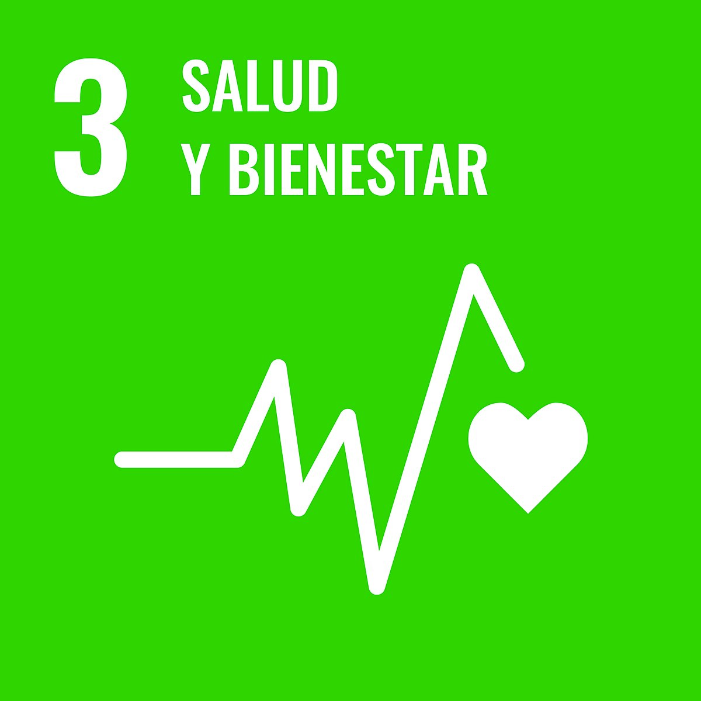
ODS 3: Salud y Bienestar

ODS 4: Educación de Calidad
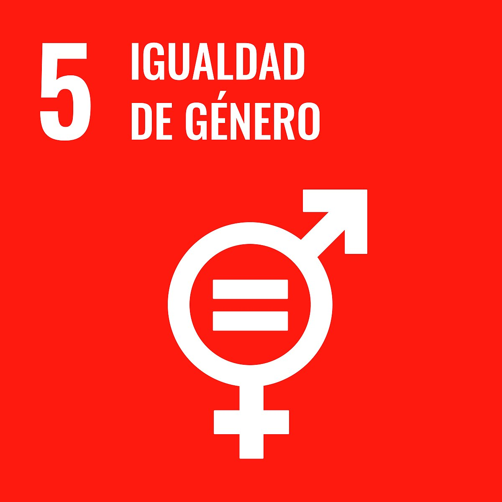
ODS 5: Igualdad de Género

ODS 6: Agua Limpia y Saneamiento

ODS 7: Energía Asequible y No Contaminante
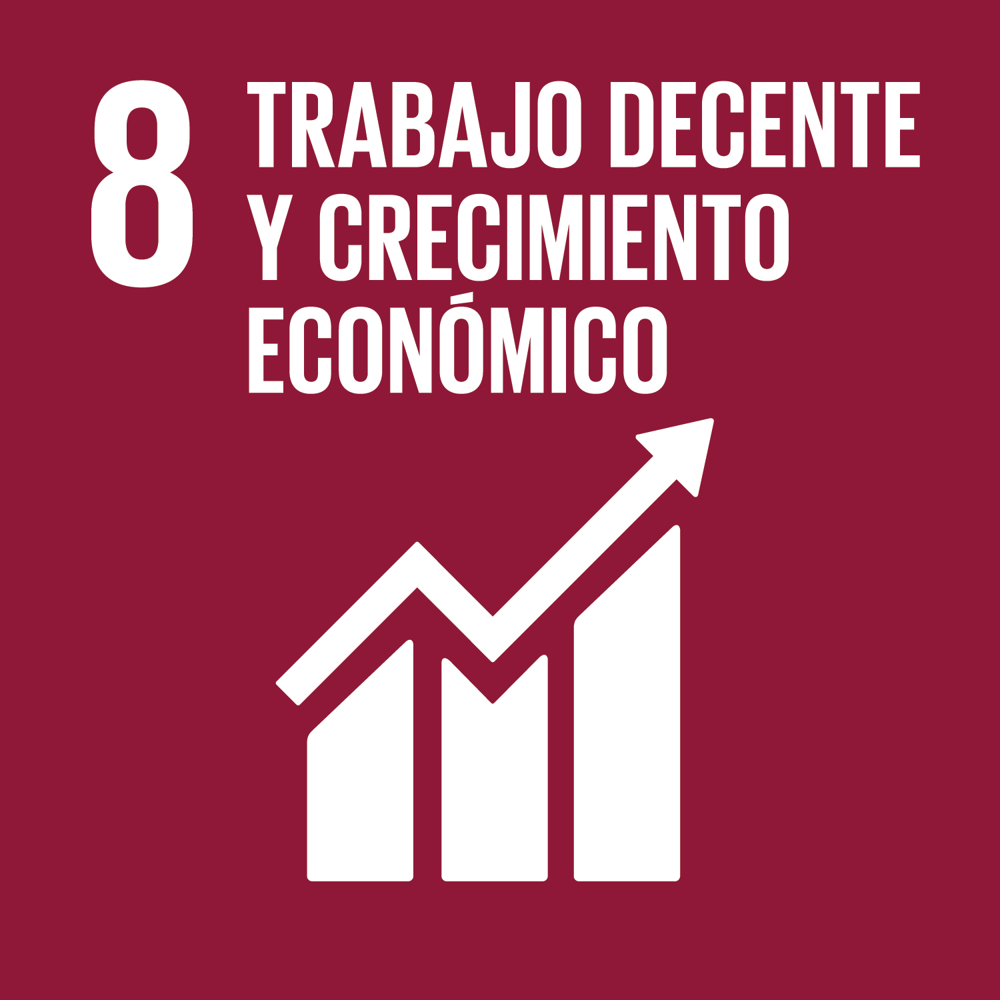
ODS 8: Trabajo Decente y Crecimiento Económico
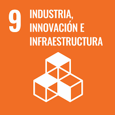
ODS 9: Industria, Innovación e Infraestructura

ODS 10: Reducción de las Desigualdades
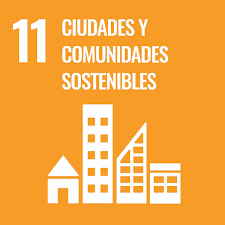
ODS 11: Ciudades y Comunidades Sostenibles
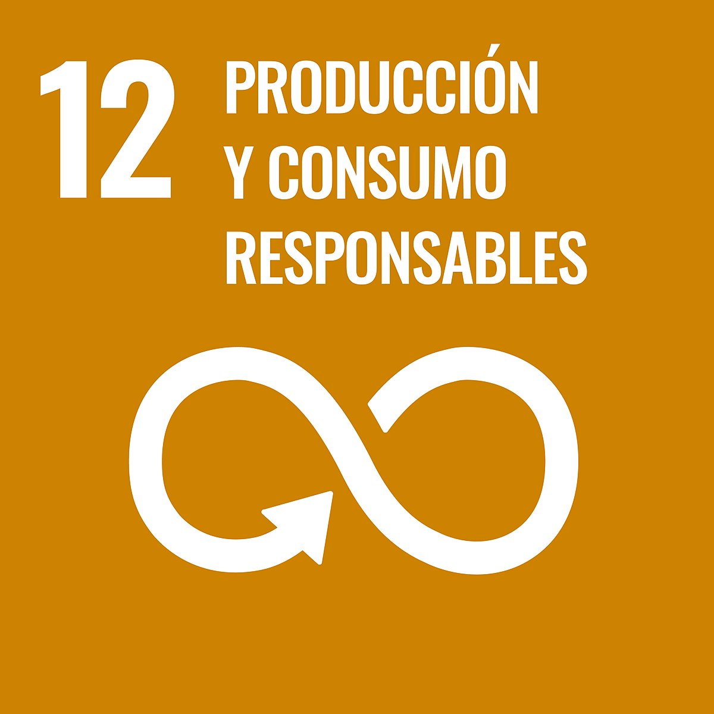
ODS 12: Producción y Consumo Responsables
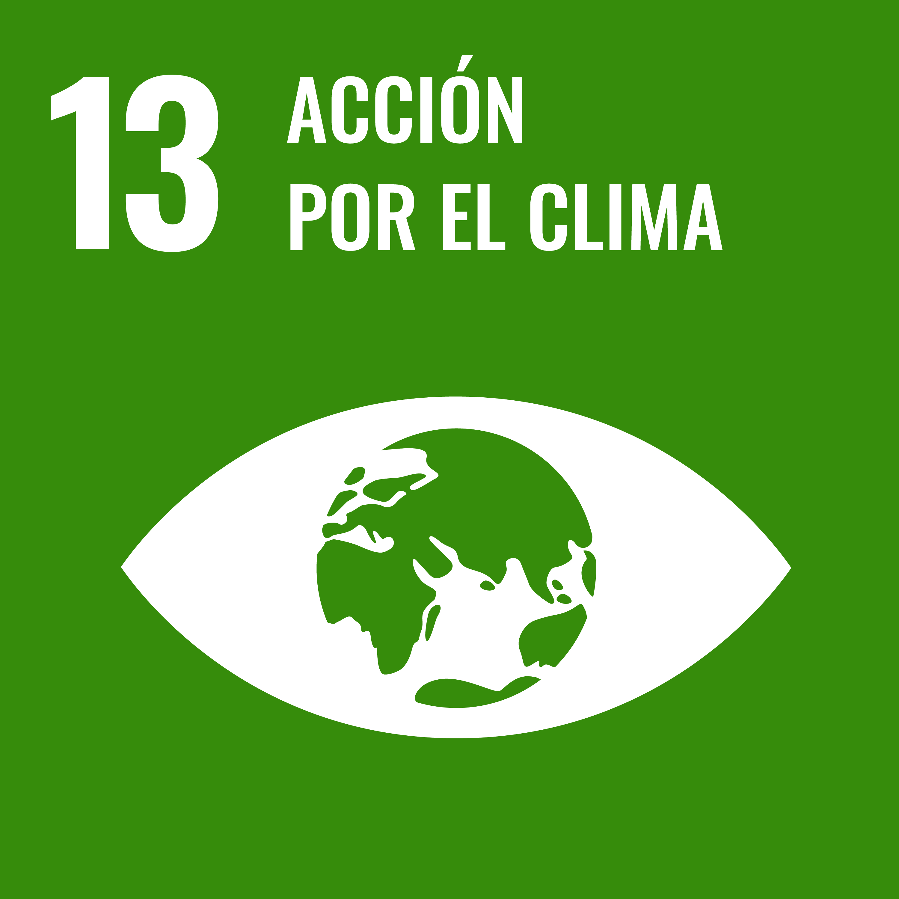
ODS 13: Acción por el Clima

ODS 14: Vida Submarina
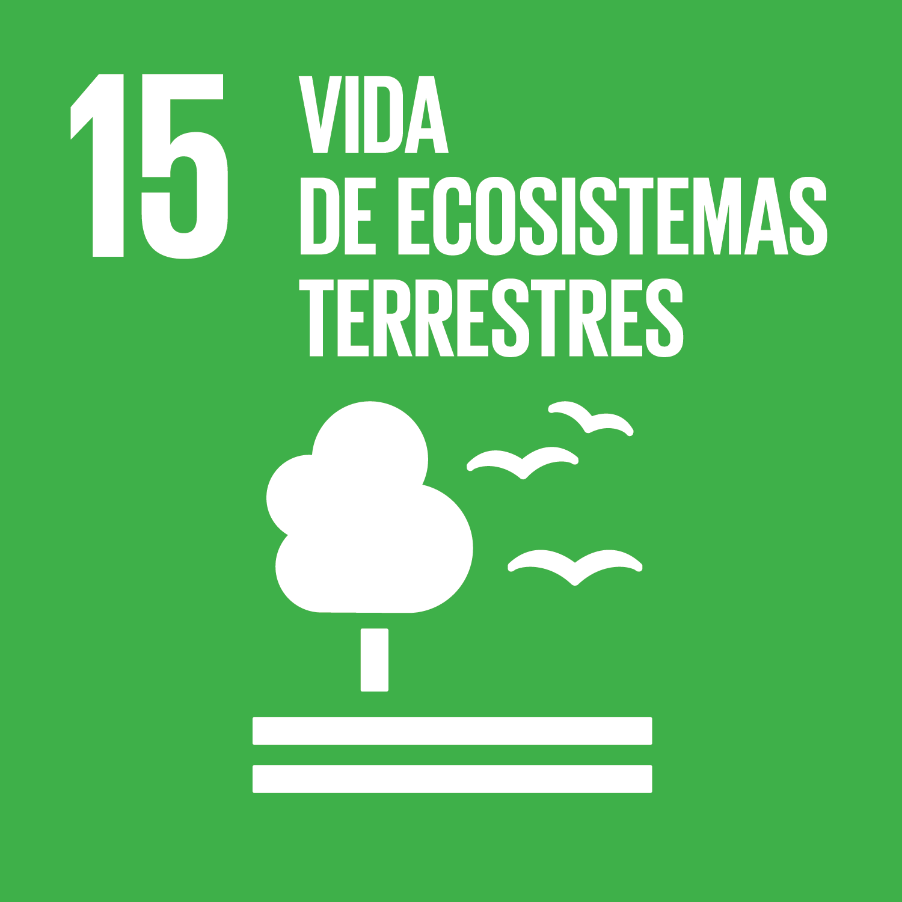
ODS 15: Vida de Ecosistemas Terrestres
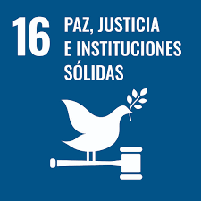
ODS 16: Paz, Justicia e Instituciones Sólidas
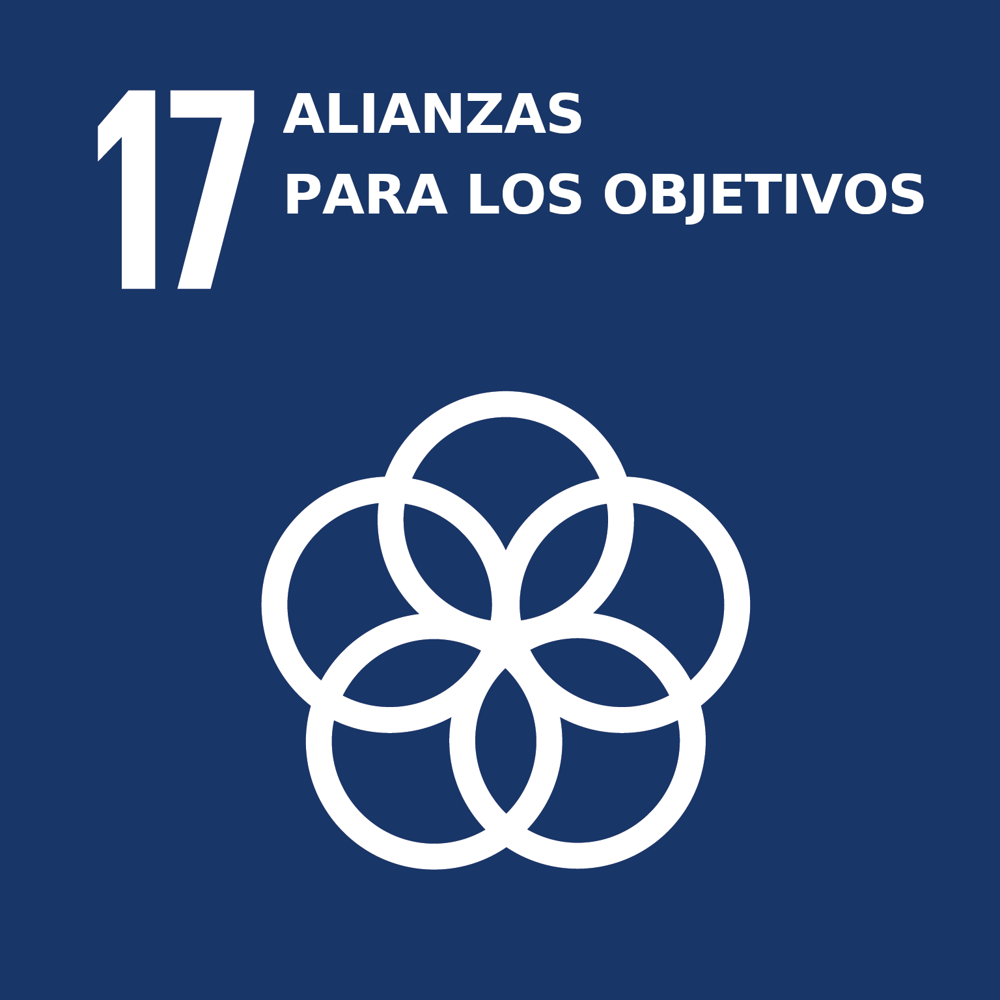
ODS 17: Alianzas para Lograr los Objetivos